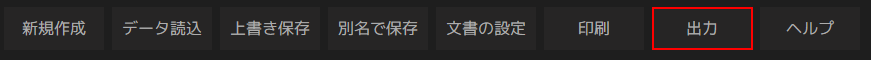
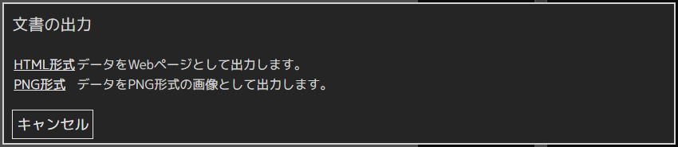

ヘルプ目次へ
出力する
Nagaharuで作成した文書を他の形式に出力します。
1、「出力」をクリックします。

2、ダイアログが表示されます。

HTML形式
Webページとして広く使用される形式です。
作成した文書をそのままホームページで公開したい場合等におすすめです。
【注意】HTML形式で出力した場合、内蔵フォントではなく、OS標準のフォントで表示されます。
PNG形式
一般的に使われる画像ファイルの形式です。
作成した文書をスマートフォンで閲覧したり、ブログに貼り付けたい場合におすすめです。
現時点で正しく出力できていないので、非推奨です。
出力をしない場合は、「キャンセル」を押して下さい。